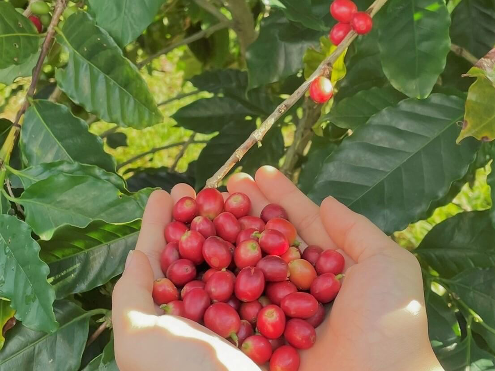
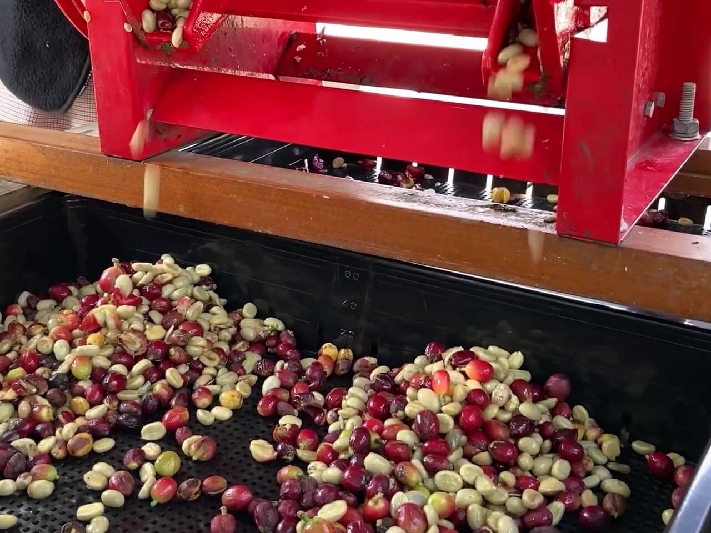
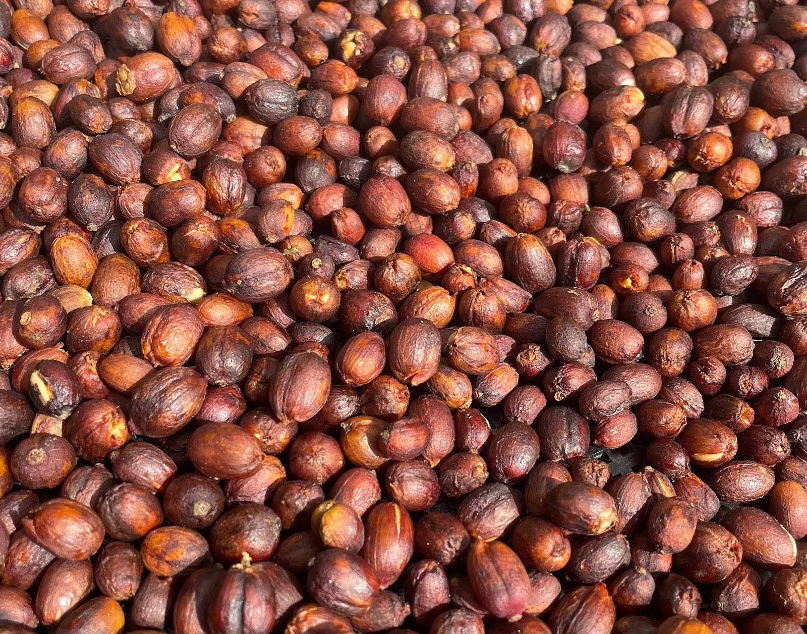
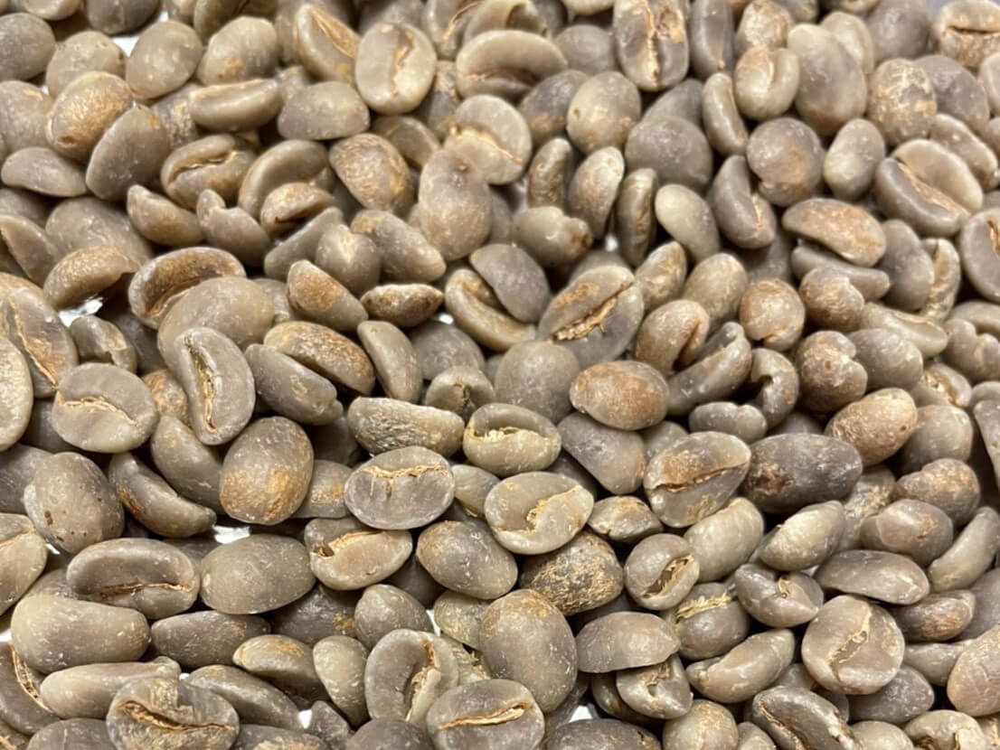
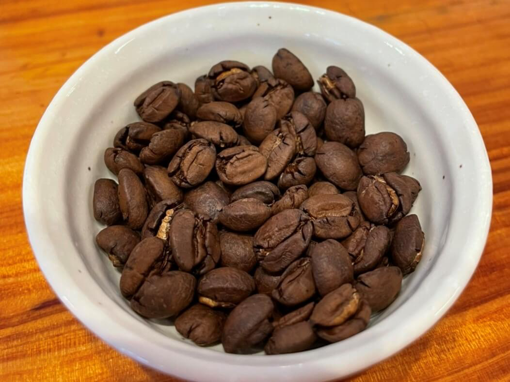

Step1

完熟した実を手摘みで収穫して水で洗います。
水に浮いた実は丁寧に取り除きます。
Step2
ハーモニーファームでは二つの方法でコーヒーを精製しています。

ウォッシュドプロセス
パルパーという機械で豆と果肉を分けます。
2日~3日水に漬けて種子に付いた果肉層(ミューシレージ)を取り除き、綺麗に洗い 流した後、乾燥します。
ナッツや黒糖のような味わいに仕上がります。

ナチュラルプロセス
果肉が着いたまま乾燥させます。
よりフルーティーな味わいに仕上がります。
Step3

風通しの良い所で3週間~1か月程乾燥させます。
乾燥が終わった豆には乾燥して固くなった果肉やパーチメントと呼ばれる薄い殻が付 いているので脱穀機で取り除きます。
脱穀した豆を『生豆』と言います。
Step4

割れたり欠けたりした欠点豆を手作業で取り除きます。
その後、焙煎すると普段見慣れたコーヒー豆になります。
収穫してから焙煎できる状態になるまでに2~3か月程かかります。

コーヒーの出来上がりです。
手作業で丁寧に栽培から精製、焙煎したコーヒーの完成です。